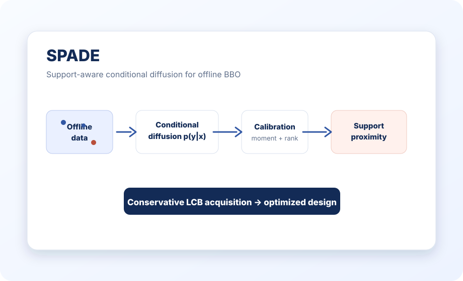
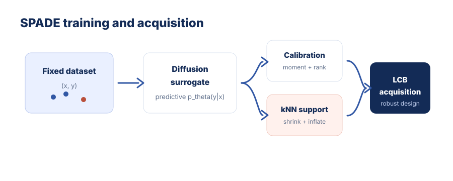
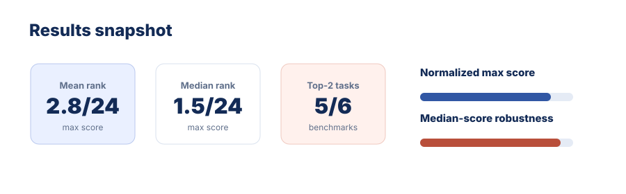

Conditional Diffusion Surrogate
Models p_theta(y|x), giving a predictive distribution instead of only a deterministic score.
A calibrated diffusion surrogate with support-proximity regularization for robust offline black-box optimization under OOD risk.
MBZUAI · McGill University · Mila – Quebec AI Institute
* Equal contribution.

TL;DR
SPADE turns forward surrogate modeling into a calibrated conditional diffusion problem and injects a kNN support prior to prevent offline optimizers from exploiting unsupported regions.
Offline black-box optimization aims to discover high-scoring designs from a fixed dataset, but learned surrogates are vulnerable to out-of-distribution exploitation. SPADE addresses this by modeling the forward likelihood p(y|x) with a conditional diffusion surrogate, then tailoring it for optimization with moment/rank calibration and kNN-based support-proximity regularization. The support regularizer shrinks predicted means and inflates uncertainty in low-density regions, making acquisition optimization conservative. Empirically, SPADE achieves state-of-the-art performance across Design-Bench tasks and an LLM data-mixture optimization benchmark.
Method
Models p_theta(y|x), giving a predictive distribution instead of only a deterministic score.
Adds moment matching and pairwise rank consistency to align the surrogate with the objective landscape.
Uses kNN distance as a data-support proxy; candidates far from the dataset receive lower means and higher uncertainty.

Results
| Task | SPADE normalized max score |
|---|---|
| SuperC | 0.546 ± 0.013 |
| Ant | 0.978 ± 0.006 |
| D’Kitty | 0.981 ± 0.003 |
| LLM-DM | 1.019 ± 0.064 |
| TF8 | 0.923 ± 0.015 |
| TF10 | 0.915 ± 0.010 |

Ablation
| Task | Base | w/o Prox | w/o Calib | Full SPADE |
|---|---|---|---|---|
| SuperC | 0.519 | 0.538 | 0.542 | 0.546 |
| Ant | 0.932 | 0.952 | 0.963 | 0.978 |
| D’Kitty | 0.962 | 0.972 | 0.975 | 0.981 |
| LLM-DM | 0.957 | 0.979 | 0.998 | 1.019 |
| TF8 | 0.890 | 0.912 | 0.897 | 0.923 |
| TF10 | 0.870 | 0.895 | 0.882 | 0.915 |
Full SPADE is best on all six tasks, showing that calibrated diffusion and support-proximity regularization are complementary.
Code
The public API exposes dataset loading, configuration, surrogate training, and acquisition optimization.
git clone https://github.com/HarryYoung2018/spade.git
cd spade
conda create -n spade python=3.10 -y
conda activate spade
pip install -r requirements.txt
pip install -e .import torch
from spade import Dataset, SpadeConfig, train_spade, optimize_spade
data = Dataset.from_npz("dataset.npz")
cfg = SpadeConfig()
device = torch.device("cuda" if torch.cuda.is_available() else "cpu")
model = train_spade(data, cfg, device=device)
result = optimize_spade(model, data, cfg, device=device)Citation
@inproceedings{yang2026spade,
title = {Support-Proximity Augmented Diffusion Estimation for Offline Black-Box Optimization},
author = {Yang, Yonghan and Yuan, Ye and Sun, Zipeng and Du, Linfeng and He, Bowei and Wu, Haolun and Chen, Can and Liu, Xue},
booktitle = {International Conference on Machine Learning},
year = {2026}
}@article{yang2026support,
title = {Support-Proximity Augmented Diffusion Estimation for Offline Black-Box Optimization},
author = {Yang, Yonghan and Yuan, Ye and Sun, Zipeng and Du, Linfeng and He, Bowei and Wu, Haolun and Chen, Can and Liu, Xue},
journal = {arXiv preprint arXiv:2605.11246},
year = {2026}
}